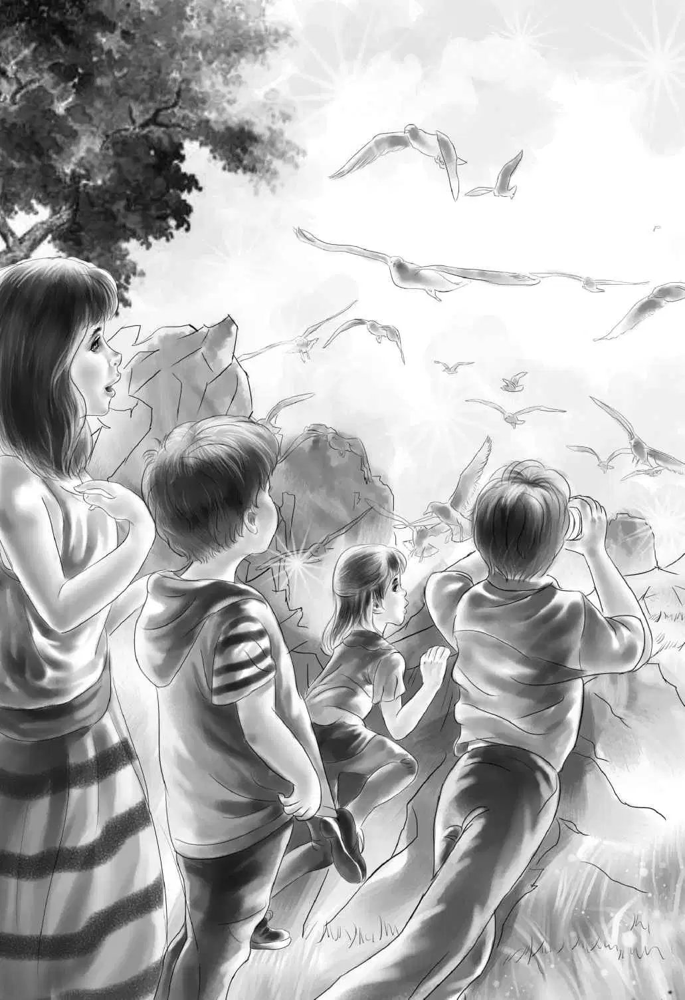

Chapter 7 Mystery in a Picture
第二天吃早饭的时候，班尼提议道：“今天我们把船屋的名字改成‘萨姆·多利号’吧。如果萨姆看到了，一定会笑得合不拢嘴。”
奥登一家现在经常在甲板上吃饭——比起厨舱来，他们更喜欢这里。
班尼看着落在桅杆上的一排排海鸥，“在甲板上吃饭唯一的麻烦，就是你们这些小家伙。我们每吃一口，你们都虎视眈眈。”
杰西说：“我在想，海鸥们在这儿觅完食后，又会飞去哪里呢？”
奥登先生回答：“它们会沿着河向下游飞，一直飞到50英里外的大海。”
吃过早饭，海鸥飞走了。班尼爬上梯子，把船屋的名字换成了“萨姆·多利号”。
维莉手拿一杯橙汁，一边后退，一边告诉班尼字母又往哪边斜了。突然，她的脚不小心绊到了沙箱。哗啦一声，橙汁洒了一地，溅到干净的白沙上。
“哎哟，看我洒在哪里了！”维莉喊道，“这些沙子可是用来灭火的。等等，有办法了。”说完，她拿过一套杯勺，小心翼翼地把湿沙子分离出来。
“还好，弄湿的沙子应该还不到一小勺。”她说。
“没关系的，”杰西说，“只要保证沙箱里的沙子超过那条刻度线就行——反正我们做到了。”
船屋顺着美丽的小河慢慢地漂着，一家人坐在船头的甲板上。
班尼在船屋顶上巡视着河面：“前面那个是什么？”
亨利说：“看上去像座小岛。”
那的确是座岛，不过超级迷你。船行到此处，河面变宽了，等靠近后，大家才看清，小岛是由礁石构成，岛上星星点点的沙堆上，点缀着稀少的灌木。船靠得更近了一些，一大群海鸥被惊得腾空而起，一边高声叫着，一边向远处飞去。
班尼从梯子上爬下来。“海鸥原来就住这里啊！”他说，“这里肯定有一百万只海鸥。”
亨利笑了起来：“行了吧，小班班，哪有一百万只？不过对这么小的岛来说，算很多了。”
看到水里有些标杆，亨利又说：“很明显，这个位置以前是个码头。咱们再划近点，管不了海鸥了，反正它们已经被我们吓跑了。”
海鸥们确实被吓飞了。不过当船停下来的时候，它们又接二连三地飞了回来，呼啦啦地落在船屋以及周围，有的落在撑杆上，有的落在石头上，四处密布。
“咱们把这里叫‘海鸥岛’吧。”班尼说。
亨利指着落在标杆上的一只巨大的海鸥说：“要是能把这个拍下来，该是多么完美的一张照片啊！”他赶忙冲进船舱，去拿他的照相机。
“保险起见，拍两张吧！”杰西建议道，“不然万一其中一张拍不好呢？哦，快看那只鸭子！”顺着她指的方向，只见一只鸟飞了回来，落在石头后边，“我们去岛上，看看它躲到哪里去了。”
大家下了船，蹚着水上了岸。海鸥瞬间又飞了起来，大声地尖叫着。孩子们和爷爷一起爬上礁石，在顶处环顾，只见一只鸭子正在水里游来游去，身后跟着七只鸭宝宝，它们时而把嘴巴伸进水里，啄食小虫子，时而又头朝下地在水中倒立。

维莉说：“真是太可爱了，是不是，亨利？看看能不能拍一张小鸭子倒立的照片——估计你只能拍到它们的尾巴吧？”
亨利一边按快门，一边说：“有两只鸭宝宝正在水里翻跟头玩呢，鸭妈妈也是。”
而此时，班尼的目光却从小岛转移到河岸上——原来是一只直立的漂亮白鸟吸引了他的注意。
“瞧，亨利！”班尼小声说，“快拍下来，这是一只白鹭呢！”
班尼蹚过水回到船上，他想找爷爷要望远镜来观察这只白鹭：它美极了，单腿站在水里，蕾丝一样的白色冠毛随风微微飘起。
“确实是白鹭，”爷爷说，“它们偶尔也会飞到如此遥远的北方来。亨利，快拍下来吧！”
这只鸟很安静，亨利不紧不慢，一张一张地按下快门。
班尼再一次用望远镜看了看白鹭，就在这时，他低声说：“亨利，那只白鹭的身后有什么东西，是白色的。快看啊！”
亨利通过相机的镜头望了过去，接着又转向那只鸟，做出要继续给它拍照的样子。
班尼小声说：“我看那应该是一个穿着白衬衫的男人。”
“没错，小班班，”亨利说，“可他为什么要躲在树后呢？他以为树能遮住自己，可我连他露在外面的两条胳膊都看到了。”
咔嚓，他按下了快门，“我拍到了一对肩膀和两只手臂。那人会不会是来监视我们的？他为什么要这么做？”
“我不知道，”班尼说，“不过看起来，他的确是在监视咱们。”这时，那个男人的胳膊动了一下。
“盯着他，”班尼激动地说，“趁他离开前，再多拍一张。”
一分钟过去了。突然，那个男人移动了——他既没有走，也没有跑，而是弯下腰，在灌木丛里爬行。亨利抓住机会又拍了几张照片，直到那个人消失在视线里。
“但愿这些照片能拍得清楚些。”班尼说。
爷爷说：“可惜的是，亨利没有带长焦镜头。”
“我带啦，”亨利说，“这些照片尺寸和质量都没问题，接下来要做的就是把它们冲洗出来。”
“对，”班尼说，“咱们尽快回到镇上吧。”
四个孩子陆续上了船，亨利将船撑离了小岛。很快，他们就沿着小河向下游漂去。
班尼和亨利望着河岸，寻找着停船的位置，与此同时，班尼还在搜寻别的——他的直觉告诉他，也许还会碰到那个穿白衬衫的男人，但是这次他并没有如愿。他突然想起来，他曾看到树林里停着一辆小轿车，虽不确定，不过那树林离海鸥岛并不太远。
终于，“萨姆·多利号”靠岸了。尽管大家都很兴奋，不过依然没有忘记锁好门窗。
他们来到了镇上的一家药店，班尼问店员：“我们有一些很重要的照片，如果要冲洗的话，需要多长时间呢？”
店员哈哈笑了起来：“看来，你一定是拍到了美国总统的照片吧。我通常都只冲洗自己的照片，不过现在不怎么忙，就当帮你们一回好啦——假如你们现在给我胶卷的话。”
“噢，太谢谢你啦！”五个人异口同声，“我们等着。”
这时，店员才意识到这些照片真的很重要，于是说道：“你们在柜台这儿坐一会儿，我尽快。”
不到半个小时，店员就把洗好的照片递给了亨利。一家人都围了过来。维莉说：“这些照片真清楚，亨利，你的镜头真不错！”
班尼只说了一个字：“看！”
他指着灌木丛中那个白色的肩膀，只见后面还有一张模糊的脸！
“是两个人。”班尼说。
亨利仔细地看了看照片。“真的还有另外一个人。”他赞同道。
维莉说：“你们觉不觉得，这两个人在监视我们的船屋？他们肯定有什么不可告人的秘密，所以一直躲在暗处。到底是因为什么呢？”
“我和班尼也是这么认为的，”亨利说，“如果他们没干坏事，干吗要躲起来？”
“你们说，咱们应该把这些照片交给警察吗？”班尼问道。
“是的，”爷爷说，“但是现在咱们得先回船屋。”
“没错，”亨利说，“我有种预感，有人想趁我们不在的时候潜入船屋——这事已经发生过一次了，很有可能发生第二次。”
亨利和班尼迅速撑船离开码头，船屋再次来到了河中心。
亨利把照片放进自己的行李箱。
“那边来了一艘船！”杰西喊道。
“我看到了，”爷爷说，“那是海上警卫队。也许是他们听说有船屋总是换名字，所以要找到咱们进行检查——这就是海上警卫队的职责，他们必须了解每艘船的动向。如果有船主违反规定，巡警就有权上船搜查，甚至可以逮捕船主。”
巡逻船上有两个人，他们驾着船小心地绕过“萨姆·多利号”，开了过来。
他们朝着亨利喊道：“把锚抛下来吧！”亨利连忙把锚扔进水里。
“上来吧，”爷爷冲他们呼喊，“我是詹姆斯·奥登。”
“嗯，我知道。”年纪稍长的巡警微笑着说，他的渔线上挂着好几条大鱼。接着，他跨上了船屋，留下同伴待在巡逻船上。
“这是刚从水里钓上来的，你们想要吗？”
杰西笑着说了声“谢谢”，把鱼接了过来。
来者继续说道：“这船屋换了那么多的名字，所以我很想见见船员们。”
“来认识一下吧，这些都是我的孙子，”奥登先生说，“这是亨利船长和他的大副——班尼，这是厨师杰西，还有小清洁女工维莉。”
“我是威廉中校，”男人说，“但愿这位小清洁女工要比看上去强壮一些。”
“是的，维莉是个很坚强的女孩呐！”班尼说，“想看看我们的创意洗衣盆吗？从船舱里走，到后甲板上来，我会让您看到的。”
中校跟着班尼走了过去，他注意到所有的一切都干净整洁——他甚至留意到了消防桶和沙箱。他还没来得及寻找洗衣盆在哪里，维莉就已经跳进河里的绳椅中。
“哇噢，我从来没见过这种东西！”威廉中校兴奋地赞叹道，“是你做的吗？”
“是亨利做的，”维莉说，“我只负责洗衣服，杰西负责晾晒。”说完，她从椅子里游了出来，爬上了甲板。
“你们船上的一切都井然有序，”中校说道，“而且卫生也打扫得很干净。你们喜欢这种生活吗？”
“当然，我们玩得很开心呢！”班尼回答，“每天都有新鲜事儿。”
“是吗？”中校说，“比如说……”
奥登一家顿时变得严肃了，爷爷开口说道：“中校，您能过来，真是让我们太欣慰了。”
“我们觉得很多事情都不对劲。”亨利说。
“是船屋不对劲？”
“船屋没有什么，是河岸上的问题。”亨利说。
班尼说：“我们发现了些奇怪的事情。”
“嗯，不得不说，警方也这么认为。”威廉说，“所以他们要求河岸巡逻队来援助——我们经常一起合作。他们也觉得事情不对劲，但他们需要证据。”
“我们也许有证据，”亨利说，“我给您看几张照片吧，这是我在海鸥岛拍的。”他把那几张白鹭的照片递给了中校。
“很好。”威廉中校说着，拿出一个小放大镜，仔细地查看起来。
“我看到的这些，你也注意到了吗，亨利船长？”他问道。
“是的，我看到一个躲藏着的男人，他身后不远处，有一张模糊的脸，不知道您指的是不是这个？”
“不，我说的是那个男人左手上的黑色戒指。”他把放大镜和那张最清晰的照片递给了亨利。
亨利拿起放大镜仔细地看着。“是啊，我们竟然没发现！”他惊呼起来，“我从来没注意到那个戒指。杰西，你注意到了吗？”
“没有啊，”杰西回答，“让我看看。”
“我也没注意到。”班尼说。
班尼看了看照片。“哦！”他激动地喊了出来，“我以前见过这枚黑色的戒指，亨利！还记得咱们在榆树小馆时，我跟你说那个开快车的男人是用右手开车的吗？这枚戒指就戴在那个男人的左手上——他搭着车窗的时候，我看到了！”
“没错，”亨利说，“我想起来啦！”
中校说：“很好！咱们又掌握了一条信息。”他把椅背向后靠了靠，“关于河岸两边的怪事，你们还知道些什么？”他一边说，一边望着班尼。
“我们知道，河岸边至少有六个居民过着惴惴不安、心惊胆战的生活，他们又不敢跟别人说。还有，在彭福的拍卖会上，那个花瓶被人偷走了。”
杰西说：“还有，我们那天从拍卖会场回到船屋，闻到房间里有烟味，而且我们的挂钟也被偷了。我们觉得有人持有我们船屋的钥匙。”
威廉中校点点头，说道：“也许我可以来分析一下。在你们之前，那户给船屋起了‘蓝鹭’这个名字的租客，对钥匙的保管非常大意。记得有一天，他们出门购物时，把钥匙插在锁孔里忘了拔下来。我那天碰巧需要配一把钥匙，就去了锁匠那里，很惊讶地发现一个男人悄悄地从后门溜了出去。我问锁匠那人是谁，但他支支吾吾的，我顿时起了疑心，锁匠最后还是说了，那个男人配的是大河先生船屋的钥匙。也许，这就是有人在你们离开后趁机而入的原因。”
“那个男人究竟是谁呢？”班尼问道。
“我也不知道，”中校说，“如果你们告诉我，是哪些人在担惊受怕，或许还会起到一些作用。”
“萨姆和杰夫，就是在‘四月中心’的那一对双胞胎，”班尼开始数了起来，“还有在彭福开糖果店的扬格太太和她的姐姐，还有‘二次登陆点’餐馆里的女服务员。还有一个戴着红帽子的小男孩，我不知道他是谁。”
“你们不会认为，那个戴红帽的小男孩就是趁你们不在，溜上船屋的人吧？”
“不！”班尼说，“我觉得他不是，我很喜欢他。”
“那你知道，那个戴红帽子的小男孩就是扬格太太的儿子吗？”
“不知道啊，”班尼说，“难怪扬格太太担心成这个样子！”
“是啊，她担心的事情太多了。这个小男孩回家的时候带着25美元，却不肯告诉妈妈这钱是哪儿来的。所以扬格太太觉得自己的儿子干违法的事了。”
“我想她是对的。”亨利点头说道。
威廉中校站起身，“现在我必须得走了。如果可以给我一张照片的话，我会把它交给警察局，也许能派上用场。”
“很高兴能帮到您。”亨利说。
“谢谢您的鱼。”杰西说。